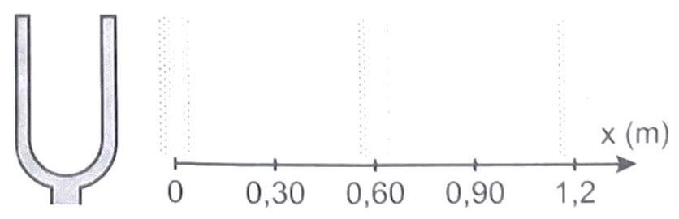
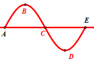
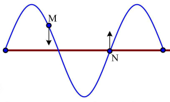
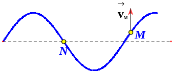
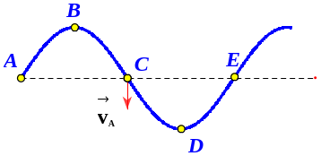

Một sóng ngang truyền trên mặt nước có tần số 10 Hz. Tại một thời điểm nào đó một phần tử mặt nước có dạng như hình vẽ. Trong đó khoảng cách từ các vị trí cân bằng của A đến vị trí cân bằng của D là 45 cm và điểm C đang đi từ vị trí cân bằng đi xuống. Xác định chiều truyền của sóng và tốc độ truyền sóng
Trên mặt thoáng một chất lỏng có một nguồn phát sóng. Tại thời điểm t, hai điểm M, N trên cùng phương truyền sóng có trạng thái dao động như hình vẽ. Gọi P là trung điểm của MN. Chiều truyền sóng và trạng thái dao động của P tại thời điểm t là:
Tại thời điểm t nào đó sóng trên sợi dây có dạng như hình vẽ. Tại thời điểm này phần tử M đang đi lên. Chiều truyền sóng và vị trí của phần tử N sau đó một phần tư chu kì là
Một sóng cơ truyền trên mặt nước với tần số $f = 10$ Hz, tại một thời điểm nào đó các phần tử mặt nước có dạng như hình vẽ. Trong đó khoảng cách từ vị trí cân bằng của A đến vị trí cân bằng của D là 30 cm và điểm C đang từ vị trí cân bằng của nó đi xuống. Chiều truyền và tốc độ truyền sóng là:Nhập thông tin để hệ thống ghi nhận kết quả.